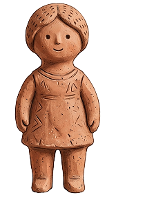
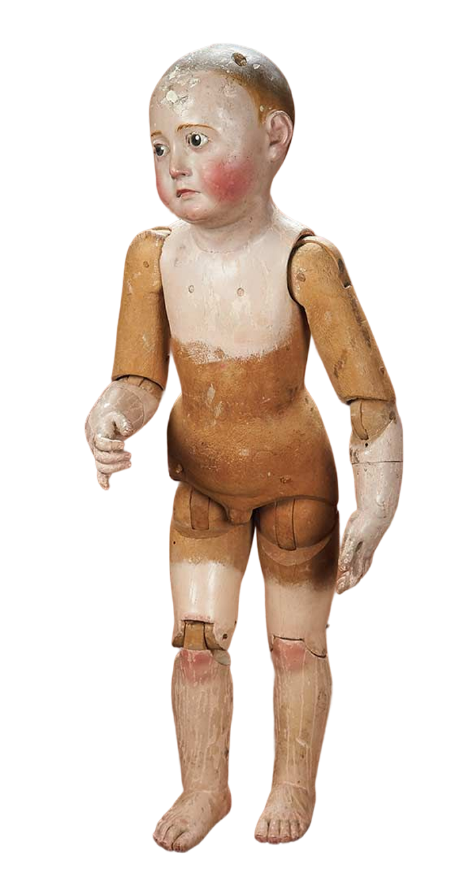
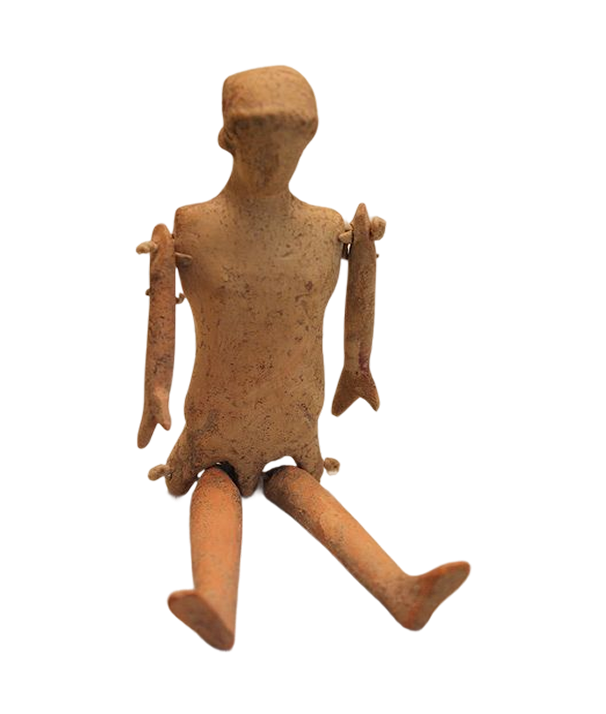
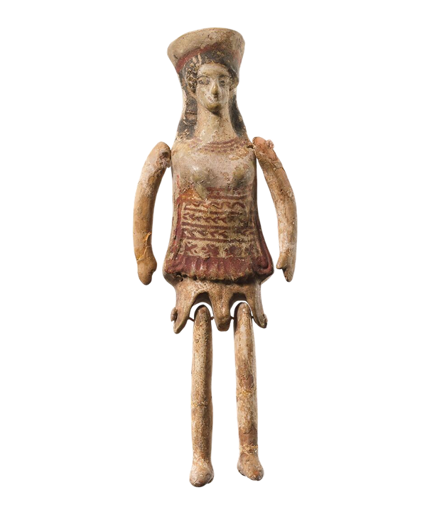

PERIODO ANTICO - DOVE TUTTO HA AVUTO INZIO
BAMBOLE DI TERRACOTTA
Prima della plastica, prima del vinile e perfino prima delle raffinate porcellane settecentesche, esisteva la terra cotta. Queste piccole figure antropomorfe, ritrovate in abbondanza nei siti archeologici della Grecia Antica, di Roma e dell'Egitto, sono le antenate dirette delle bambole moderne.
L'ORIGINE E IL SIGNIFICATO
Inizialmente nate per scopi rituali o religiosi (spesso deposte nelle tombe come simboli di protezione), le bambole in terracotta divennero col tempo veri e propri oggetti di svago.
- Atene e Corinto: Erano i centri principali di produzione. Qui gli artigiani utilizzavano stampi in argilla per creare figure cave, leggere e facili da maneggiare per i bambini.
- Il rito di passaggio: Nel mondo greco, era usanza che le fanciulle, alla vigilia delle nozze, consacrassero le loro bambole d'argilla ad Artemide o Afrodite, segnando ufficialmente la fine dell'infanzia.



CARATTERISTICHE TECNICHE
- Articolazioni Mobili: Braccia e gambe erano spesso collegate al franco tramite fili di lana o cordicelle, permettendo alla bambola di "camminare" o ballare.
- Dettagli Dipinti: Una volta cotta, la terracotta veniva dipinta con colori vivaci (rosso, nero, blu) per rendere i tratti del viso e la acconciatura.
- Accessori: Alcuni venivano modellati già con minuscoli strumenti musicali o piccoli animali domestici tra le mani.

PERCHE' SONO
IMPORTANTI OGGI?
Studiare le bambole in terracotta significa esaminare come, millenni fa, la società vedeva se stessa. Attraverso i loro vestiti modellati nell'argilla e le loro acconciature elaborate, questi giocattoli ci raccontano la moda, i canoni estetici e la vita quotidiana di civiltà scomparse, dimostrando che il desiderio di "giocare alla vita" è un istinto umano universale.
